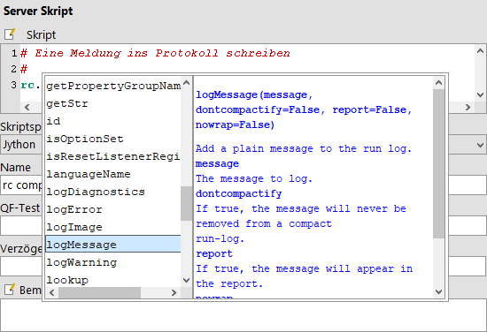
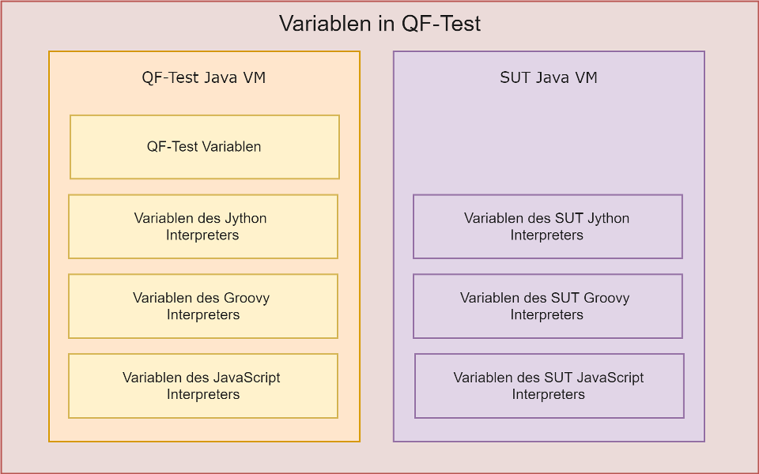

| Version 6.0.3 |
 Das Video 'Skripting in QF-Test'
(Grundlagen) behandelt die Grundlagen des Skriptens.
Das Video 'Skripting in QF-Test'
(Grundlagen) behandelt die Grundlagen des Skriptens.
Das Video 'Skripting in QF-Test' (Fortgeschritten) zeigt weitere Möglichkeiten des Skriptens.
Es ist einer der großen Vorteile von QF-Test, dass komplexe Tests erstellt werden können, ohne eine einzige Zeile Code zu schreiben. Allerdings gibt es Dinge, die sich mit einem GUI alleine nicht bewerkstelligen lassen. Für ein Programm, das Daten in eine Datenbank schreibt, könnte es z.B. sinnvoll sein, zu überprüfen, ob die Daten korrekt geschrieben wurden. Oder man könnte Testdaten aus einer Datenbank oder einer Datei lesen und mit diesen einen Test ausführen. All das und mehr wird mit Hilfe der mächtigen Skriptsprachen Jython, Groovy und JavaScript ermöglicht.
4.2+Jython ist von Anfang an dabei, Groovy seit QF-Test Version 3. Ab Version 4.2 kann man auch JavaScript als Skriptsprache verwenden. Es ist eine Frage des Geschmacks, welcher dieser Sprachen man den Vorzug gibt. Wer jedoch bereits mit Java vertraut ist, wird sich wahrscheinlich eher mit Groovy denn mit Jython anfreunden. Web Entwickler werden vermutlich JavaScript verwenden.
In diesem Kapitel werden zunächst die Grundlagen der Skriptintegration und die in allen Skriptsprachen zur Verfügung stehenden Module beschrieben. Auf die Besonderheiten der Sprachen Groovy Skripting, Jython Skripting und JavaScript Skripting wird in den jeweiligen Abschnitten eingegangen.
3.0+ Die Skriptsprache eines Knotens wird nun mit dem Attribut 'Skriptsprache' eines 'Server Skript' oder 'SUT Skript' Knotens festgelegt. Somit können also alle drei Sprachen innerhalb einer Testsuite parallel verwendet werden. Welche Sprache als Standard verwendet werden soll, kann über die Option Voreingestellte Sprache für Skript Knoten eingestellt werden.
Beim Skripting ist die Herangehensweise von QF-Test genau umgekehrt zu der anderer GUI Testprogramme. Anstatt den gesamten Test durch ein Skript zu steuern, bettet QF-Test kleine Skripte in die Testsuite ein. Dies geschieht mit Hilfe der Knoten 'Server Skript' und 'SUT Skript'.
Beiden Knoten gemeinsam ist das Attribut 'Skript' für den eigentlichen Programmcode.
|
|  | ||
|
| Abbildung 11.1: Detailansicht eines 'Server Skript' Knotens
mit Hilfefenster für rc-Methoden | ||
3.0+ Der in QF-Test integrierte Skripteditor verfügt über ein paar nützliche Eigenschaften, die das Eingeben des Codes erleichtern. Reservierte Schlüsselwörter, eingebaute Funktionen, Standard-Objekttypen, Literale und Kommentare werden farblich hervorgehoben. Innerhalb von Blöcken werden Codezeilen automatisch eingerückt und am Blockende wieder ausgerückt. Mit Hilfe von [TAB] können auch mehrere markierte Zeilen von Hand ein- oder ausgerückt ([Shift-TAB]) werden.
Das vielleicht - zumindest für den QF-Test Neuling - wichtigste Feature des integrierten
Editors ist jedoch die Eingabehilfe für viele eingebaute Methoden. Gibt man
beispielsweise rc. ein (und ggf. zusätzlich einen oder mehrere
Anfangsbuchstaben eines Methodennamens) und drückt dann [Ctrl-Leertaste], so erscheint ein Popup-Fenster mit den passenden Runcontext
Methoden und ihrer Beschreibung (vgl. Kapitel 46). Nach Auswahl
einer Methode und anschließender Bestätigung mit [Eingabe] wird die
gewählte Methode in den Skriptcode eingefügt. Drückt man [Ctrl-Leertaste] nach einem Leerzeichen, wird eine Liste aller Objekte angezeigt, für
die Hilfe zur Verfügung steht.
'Server Skripte' sind für Dinge wie das Berechnen von Variablenwerten oder das Einlesen und Parsen von Testdaten nützlich. 'SUT Skripte' öffnen dagegen den unbeschränkten Zugang zu den Komponenten des SUT und zu allen anderen Java Schnittstellen, die das SUT bietet. Ein 'SUT Skript' könnte z.B. zum Auslesen oder Überprüfen von Werten im SUT verwendet werden, auf die QF-Test keinen Zugriff hat. Im 'SUT Skript' Knoten muss das Attribut 'Client' auf den Namen des SUT Clients gesetzt sein, in dem es ausgeführt werden soll.
'Server Skripte' werden in jeder Skriptsprache jeweils in einem Interpreter ausgeführt, der in QF-Test selbst integriert ist, während 'SUT Skripte' in jeweils einem im SUT integrierten Interpreter laufen. Diese Interpreter sind voneinander unabhängig und haben keine gemeinsamen Zustände. QF-Test nutzt die RMI Verbindung zum SUT für eine nahtlose Integration der 'SUT Skripte' in die Testausführung.
Über die Menüeinträge »Extras«-»Jython Terminal...«, »Extras«-»Groovy Terminal...« etc. können Sie ein Fenster mit einer interaktiven Kommandozeile für den in QF-Test eingebetteten Interpreter öffnen. Darin können Sie mit der jeweiligen Skriptsprache experimentieren, um ein Gefühl für die Sprache zu entwickeln, aber auch komplexe Dinge ausprobieren wie z.B. das Herstellen der Verbindung zu einer Datenbank. Mittels [Strg-Hoch] und [Strg-Runter] können Sie frühere Eingaben wieder verwenden. Außerdem können Sie beliebige Zeilen im Terminal bearbeiten oder eine Region markieren und mittels [Return] an den Interpreter schicken. Dabei filtert QF-Test die vom Interpreter stammenden '>>>' und '...' Markierungen heraus.
Entsprechende Terminals gibt es auch für SUT Clients. Diese Terminals sind über das »Clients« Menü zugänglich.
Hinweis Wenn Sie in einem SUT Skripting Terminal arbeiten, müssen Sie eines
beachten: Die Kommandos werden vom Interpreter nicht im Event Dispatch Thread
ausgeführt, im Gegensatz zu Kommandos, die in einem
'SUT Skripten' Knoten ausgeführt werden.
Das sagt Ihnen möglicherweise nichts und meistens stellt es auch kein
Problem dar, aber wenn Sie auf Swing oder SWT Komponenten zugreifen oder deren Methoden
aufrufen, besteht die Gefahr, dass die gesamte Applikation einfriert. Um das zu
verhindern stellt QF-Test die globale Funktion runAWT (bzw.
runSWT) zur Verfügung, mit deren Hilfe Sie beliebigen Code im Dispatch
Thread ausführen können. Um zum Beispiel die Anzahl der sichtbaren Knoten einer
JTree Komponente namens tree zu ermitteln, verwenden Sie
runAWT("tree.getRowCount()") (bzw. runAWT { tree.getRowCount()
} in Groovy) um ganz sicher zu gehen.
rc
Zur Ausführung von 'Server Skripten' und 'SUT Skripten' stellt QF-Test eine spezielle Umgebung zur Verfügung, zu der u.a. das Runcontext Objekt gehört, das den aktuellen Zustand der Ausführung eines Tests repräsentiert. Auf dieses Objekt kann über die Variable "rc", welche in allen Sprachen verfügbar ist, zugegriffen werden. Es bietet Schnittstellen (vollständig dokumentiert in Abschnitt 46.5) für den Zugriff auf QF-Test Variablen, zum Aufruf von QF-Test 'Prozeduren' und um Meldungen in das Protokoll zu schreiben. Ein 'SUT Skript' kann mit seiner Hilfe außerdem auf die echten Java Komponenten des GUI im SUT zugreifen.
Für Fälle, in denen kein Runcontext verfügbar ist, z.B. Resolver, TestRunListener, Code
der in einem Hintergrund-Thread ausgeführt wird etc. bietet QF-Test ein Modul namens
qf mit hilfreichen generischen Methoden zum Logging und für andere Zwecke an.
Detaillierte Informationen hierzu finden Sie in Abschnitt 46.6.
Ein Einsatzgebiet des Runcontexts ist die Ausgabe beliebiger Meldungen im Protokoll, das QF-Test für jeden Testlauf erstellt. Diese Meldungen können auch als Warnungen oder Fehler markiert werden.
|
|
|
|||
|
| Beispiel 11.1: Meldungen aus Skripten ausgeben | |||
Wird mit kompakten Protokollen gearbeitet (vgl. die Option Kompakte Protokolle erstellen), werden Knoten, die aller
Wahrscheinlichkeit nach nicht für eine Fehleranalyse benötigt werden, eventuell
aus dem Protokoll entfernt um Speicher zu sparen. Dies betrifft nicht die
Fehlermeldung (rc.logError). Hier wird immer die Meldung selbst und
etwa 100 vorhergehende Knoten im Protokoll aufgehoben. Bei einer Warnung
rc.logWarning wird auf jeden Fall die Warnung behalten, jedoch
keine vorhergehenden Knoten. Normale Meldungen (rc.logMessage) werden
gegebenenfalls entfernt. Wenn Sie eine normale Meldung zwingend im Protokoll
behalten wollen, können Sie dies über den optionalen zweiten Parameter
(dontcompactify) erreichen:
|
|
|
|||
|
| Beispiel 11.2: Meldungen, die nicht aus kompakten Protokollen entfernt werden | |||
Die Ausgabe einer Meldung ist meist an eine Bedingung geknüpft.
Außerdem ist es oft wünschenswert, im XML oder HTML Report ein
Ergebnis analog zu einem 'Check' Knoten zu erhalten.
Hierzu dienen die Methoden rc.check und rc.checkEqual:
|
|
|
|||
|
| Beispiel 11.3: Checks durchführen | |||
Das optionale letzte Argument legt die Fehlerstufe fest.
Hierbei können rc.EXCEPTION, rc.ERROR, rc.OK bzw. rc.WARNING verwendet werden.
In QF-Test gibt es verschiedene Arten von Variablen. Es wird einerseits unterschieden zwischen QF-Test Variablen und Variablen der Skriptsprachen. Die Variablen der Skriptsprachen wiederum werden unterteilt in Server- und SUT-seitige Variablen des jeweiligen Interpreters. Die folgende Grafik verdeutlicht die Sichtbarkeit der jeweiligen Variablen Arten:
|
|  | ||
|
| Abbildung 11.2: Übersicht über die verschiedenen Variablen in QF-Test | ||
Um in den Skripten mit diesen unterschiedlichen Variablen zu arbeiten und dieses auszutauschen, stellt der Runcontext spezielle Methoden zur Verfügung. Diese Methoden werden in den nachfolgenden Abschnitten erläutert.
Auf Variablen von QF-Test in einem Skript zuzugreifen ist nicht weiter
schwierig. Auf Textvariablen können Sie mittels der Runcontext Methode lookup (siehe Abschnitt 46.5 für API Beschreibung) zugreifen.
|
|
|
|||
|
| Beispiel 11.4: Zugriff auf Textvariablen mittels rc.lookup | |||
Um die Ergebnisse eines Skripts für die weitere Ausführung
eines Tests bekannt zu machen, können Werte in globalen oder lokalen
QF-Test Variablen abgelegt werden. Der Effekt entspricht der Ausführung
eines 'Variable setzen' Knotens. Die entsprechenden Methoden im
Runcontext sind rc.setGlobal und
rc.setLocal.
|
|
|
|||
|
| Beispiel 11.5: Verwendung von rc.setGlobal | |||
Nach Ausführung des obigen Skripts wird
$(fileExists) in einem Knoten von QF-Test zu 'true' expandieren, wenn die Datei
/tmp/somefile existiert und zu 'false', wenn sie nicht existiert.
Um eine Variable zu löschen, setzen Sie deren Wert auf None in Jython bzw. null in Groovy und JavaScript . Mittels
rc.clearGlobals() aus einem 'Server Skript' können alle globalen
Variablen gelöscht werden.
Manchmal ist es hilfreich, eine Skript Variable in verschiedenen Skriptknoten der gleichen Sprache zur
Verfügung zu haben. Falls der Wert der Variablen kein simpler String oder Integer ist,
genügt es nicht, diese mit setGlobal(...) als globale QF-Test Variable zu
definieren, da der Wert dadurch in einen String umgewandelt wird. Stattdessen sollten
Sie die Variable als global deklarieren, wie es das folgende Beispiel
zeigt.
|
|
|
|||
|
| Beispiel 11.6: Globale Jython Variable | |||
globalVar steht nun in allen folgenden Skriptknoten desselben Typs zur
Verfügung ('Server Skripte' oder 'SUT Skripte' desselben Clients). Um
den Wert von globalVar in einem anderen Skriptknoten zu verändern, ist
erneut eine Deklaration mit dem Schlüsselwort global notwendig. Andernfalls
wird eine neue lokale Variable mit gleichem Namen erzeugt. Um eine globale Jython
Variable zu entfernen, kann die del Anweisung verwendet werden:
|
|
|
|||
|
| Beispiel 11.7: Löschen einer globalen Jython Variable | |||
In Groovy und JavaScript werden globale Variablen noch einfacher erzeugt als in Jython. Die Regel lautet, dass undeklarierte Variablen im Binding des Skripts erwartet werden. Sind sie dort nicht zu finden, werden sie automatisch hinzugefügt.
|
|
|
|||
|
| Beispiel 11.8: Definieren von globalen Variablen in Groovy bzw. JavaScript | |||
|
|
|
|||
|
| Beispiel 11.9: Verwenden und entfernen einer globalen Groovy Variablen | |||
Es kommt vor, dass Variablen, die in einem Interpreter definiert wurden, später in einem anderen Interpreter benötigt werden. So könnte zum Beispiel eine Liste von Werten, die mit Hilfe eines 'SUT Skripts' aus einer Tabelle gelesen werden, in einem 'Server Skript' weiterverwendet werden, um darüber zu iterieren.
Um derartige Aufgaben zu vereinfachen, stellt der Runcontext einen
symmetrischen Satz von Methoden zum Zugriff auf und zur Modifikation
von Variablen in einem anderen Skript Interpreter bereit. Für
'SUT Skripte' sind dies die Methoden toServer
und fromServer. Die entsprechenden Methoden für
'Server Skripte' heißen toSUT und
fromSUT.
Das folgende Jython Beispiel zeigt, wie ein 'SUT Skript' direkt eine globale Variable im Jython Interpreter von QF-Test setzen kann:
|
|
|
|||
|
| Beispiel 11.10: Setzen einer Server Variablen aus einem 'SUT Skript' heraus | |||
Nach Ausführung des obigen Skripts enthält die globale Variable namens "tableCells" in QF-Test's Jython Interpreter das Array der Werte aus der Tabelle.
Hinweis Die Tabellenwerte im obigen Beispiel sind nicht notwendigerweise Strings. Sie könnten Zahlen sein, Datumswerte, was auch immer. Leider ist der pickle Mechanismus von Jython nicht mächtig genug, um Instanzen von Java Klassen zu transportieren (nicht einmal von serialisierbaren), so dass der Austauschmechanismus auf primitive Typen wie Strings und Zahlen sowie auf Jython Objekte und Strukturen wie Arrays und Dictionaries beschränkt ist.
Für 'SUT Skripte' bietet der Runcontext eine äußerst
nützliche Methode. Durch den Aufruf von
rc.getComponent("componentId") werden die Informationen
aus dem 'Komponente' Knoten mit der 'QF-Test ID'
"componentId" aus der Testsuite geholt und an den Mechanismus zur
Wiedererkennung von Komponenten gereicht. Dieser arbeitet genau wie
bei der Simulation eines Events, das heißt, er wirft auch die
entsprechenden Exceptions, falls die Komponente nicht gefunden
werden kann.
Im Erfolgsfall wird die Komponente an das Skript zurückgegeben und zwar nicht in Form von abstrakten Daten, sondern das konkrete Objekt. Alle Methoden, die die Java API der Klasse dieser Komponente zur Verfügung stellt, können ausgeführt werden, um Informationen auszulesen oder um Effekte zu erzielen, die durch das GUI nicht möglich sind. Um eine Liste der Methoden einer Komponente anzuzeigen, siehe Abschnitt 5.12.
|
|
|
|||
|
| Beispiel 11.11: Zugriff auf Komponenten mit rc.getComponent | |||
Sie können auf diesem Weg auch auf Unterelemente zugreifen. Wenn der
Parameter componentId ein Element referenziert, liefert
getComponent ein Paar zurück, bestehend aus der
Komponente und dem Index des Elements. Der Index kann dazu verwendet
werden, den eigentlichen Wert zu ermitteln. Das folgende Beispiel
zeigt, wie Sie den Wert einer Tabellenzelle auslesen. Beachten Sie
dabei auch die praktische Methode mit der Jython das Auspacken von
Sequenzen bei Zuweisungen unterstützt.
|
|
|
|||
|
| Beispiel 11.12: Zugriff auf Unterelemente mit rc.getComponent | |||
Der Runcontext kann auch dazu verwendet werden, 'Prozeduren' in QF-Test auszuführen.
|
|
|
|||
|
| Beispiel 11.13: Einfacher Prozeduraufruf in Jython | |||
In obigem Beispiel wird die 'Prozedur' namens "clearField" im 'Package' namens "text" aufgerufen. Die Parameter für den Aufruf sind "component" mit dem Wert "nameField" und "message" mit dem Wert "nameField cleared".
Dasselbe Beispiel mit der veränderten Groovy Syntax:
|
|
|
|||
|
| Beispiel 11.14: Einfacher Prozeduraufruf in Groovy | |||
Und in JavaScript:
|
|
|
|||
|
| Beispiel 11.15: Einfacher Prozeduraufruf in JavaScript | |||
Der Rückgabewert einer 'Prozedur', der mittels eines 'Return' Knotens
festgelegt werden kann, ist gleichzeitig der Rückgabewert des
rc.callProcedure Aufrufs.
Hinweis In einem 'SUT Skript' Knoten sollte
rc.callProcedure(...) nur mit großer Vorsicht verwendet werden. Rufen Sie
nur 'Prozeduren' mit kurzer Laufzeit auf, die keine allzu komplexen Operationen im
SUT auslösen. Andernfalls könnte eine DeadlockTimeoutException verursacht
werden. Wenn Daten für datengetriebene Tests zwingend im SUT ermittelt werden müssen,
transferieren Sie diese mittels rc.toServer(...) zu QF-Test's Interpreter und
treiben Sie die Tests dann aus einem 'Server Skript' Knoten, für den es keine
derartigen Einschränkungen gibt.
Viele der in Kapitel 37 beschriebenen Optionen können auch zur
Laufzeit via rc.setOption gesetzt werden. Konstanten für die Namen dieser
Optionen sind in der Klasse Options definiert, welche in den Skriptsprachen automatisch verfügbar ist.
Ein reelles Beispiel, bei dem es sinnvoll ist, eine Option temporär zu setzen, ist die Wiedergabe eines Events auf eine deaktivierte Komponente. Für diesen Sonderfall muss die Überprüfung durch QF-Test auf den enabled/disabled Zustand verhindert werden:
|
|
|
|||
|
| Beispiel 11.16: setOption | |||
Nach abspielen des speziellen Events sollte der ursprüngliche Wert der Option, wie er aus der Konfigurationsdatei gelesen oder im Optionen-Dialog gesetzt wurde, wieder hergestellt werden, wie im folgendem Beispiel gezeigt:
|
|
|
|||
|
| Beispiel 11.17: unsetOption | |||
HinweisStellen Sie sicher, dass Sie QF-Test Optionen immer in einem 'Server Skript' Knoten und SUT Optionen in einem 'SUT Skript' Knoten setzen, andernfalls hat die Aktion keinen Effekt. Die Dokumentation der Optionen in Kapitel 37 führt für jede Option den korrekten Knoten auf.
Es könnten Fälle auftreten in denen Sie eine bestimmte Komponente
suchen müssen, um mit dieser arbeiten zu können. Manchmal kann das
Aufzeichnen aller in Frage kommenden Komponenten sehr mühsam oder
schlicht zu kompliziert sein. Für solche Fälle können Sie die
Methode rc.overrideElement verwenden, um die gefundene
Komponente (Suche mittels generischen Komponenten oder mittels
Skript) einer QF-Test Komponente zuzuordnen. Danach können Sie mit den
gewohnten QF-Test Knoten mit dieser Komponente arbeiten.
Stellen Sie sich vor, wir möchten immer mit dem ersten Textfeld
eines Panels arbeiten. Jedoch könnte das einfache Aufzeichnen der
Textfelder nicht möglich sein, da sich der Inhalt zu stark
ändert. Nun können wir ein Skript implementieren, welches das erste
Textfeld sucht. Dann können wir dieses gefundene Textfeld einer
Komponente PriorityAwtSwingComponent aus der
Standardbibliothek qfs.qft zuordnen.
Nachdem wir das Skript ausgeführt haben, können mit der Angabe der
QF-Test ID PriorityAwtSwingComponent alle gewohnten
QF-Test Knoten benutzen um mit dem gefundenen Textfeld zu arbeiten.
|
|
|
|||
|
| Beispiel 11.18: Jython rc.overrideElement | |||
Dieses Konzept ist sehr nützlich, wenn Sie einen Algorithmus kennen, um ihre Zielkomponenten für bestimmte Testschritte zu suchen.
Sie können solche Priority-Komponenten für alle unterstützten
Engines in der Standardbibliothek qfs.qft finden.
Ein Beispiel finden Sie auch in Ihrer QF-Test Installation in der
mitgelieferten Testsuite carconfig_de.qft im Verzeichnis
demo/carconfig.
HinweisJython basiert auf Python 2 und nicht Python 3. Wenn also in diesem Handbuch nur von "Python" ohne genauere Angabe die Rede ist, ist immer Python 2 gemeint.
Python ist eine vielseitige, objektorientierte Skriptsprache, die von Guido van Rossum entworfen und in C implementiert wurde. Hilfreiche Informationen zu Python gibt es unter http://www.python.org. Python ist eine standardisierte Sprache und seit vielen Jahren etabliert. Umfassende Dokumentation dazu ist frei verfügbar, daher beschränkt sich dieses Handbuch darauf, die Integration von Jython in QF-Test zu erklären. Die Sprache selbst ist sehr natürlich und intuitiv. Ihre größte Stärke ist die Verständlichkeit und Lesbarkeit von Python Skripten. Daher sollten Sie keine Probleme haben, die folgenden Beispiele zu verstehen.
Jython (früher JPython genannt) ist eine Implementierung von Version 2 der Programmiersprache Python in Java. Jython hat dieselbe Syntax wie Python und verfügt über beinahe identische Features. Die Objektsysteme von Java und Jython haben vieles gemeinsam und Jython kann nahtlos in Anwendungen wie QF-Test integriert werden. Das macht es zu einem äußerst nützlichen Werkzeug für Java Skripting. Jython hat seine eigene Homepage unter http://www.jython.org. Dort gibt es unter anderem auch ein ausführliches Tutorial zum Einstieg.
QF-Test verwendet die Jython Version 2.7, die einen Großteil der Standard Python 2 Bibliothek unterstützt.
Die Skriptsprache Jython wird in QF-Test nicht nur in 'Server Skript' und 'SUT Skript'
Knoten verwendet, sondern auch in $[...] Ausdrücken und zur Auswertung von Bedingungen wie im
Attribut 'Bedingung' von 'If' Knoten.
HinweisIn Jython Skripten werden QF-Test Variablen der Form $(var) oder ${Gruppe:Name} vor Ausführung des
Skripts expandiert. Dies kann zu unerwünschten Effekten führen, insbesondere wenn die Werte dieser Variablen
Zeilenumbrüche oder Backslash Zeichen ('\') enthalten. Es sollte stattdessen Methode rc.lookup()
(vgl. Abschnitt 11.2.3.1) verwendet werden, die erst während der Ausführung des Skripts
evaluiert wird.
Module für Jython in QF-Test sind nichts anderes als gewöhnliche Python Module. Sie können Module in QF-Test importieren und deren Methoden aufrufen, was die Entwicklung komplexer Skripte stark vereinfacht und außerdem die Wartbarkeit Ihrer Tests erhöht, da Module testsuiteübergreifend verfügbar sind.
Module, die Sie für mehrere Testsuiten zur Verfügung
stellen wollen, sollten Sie im jython Verzeichnis unter
QF-Tests Wurzelverzeichnis ablegen. Module, die speziell für eine
Testsuite geschrieben sind, können auch direkt im selben Verzeichnis
wie die Testsuite liegen. Das versionsspezifische Verzeichnis
qftest-6.0.3/jython/Lib ist für Module
von Quality First Software GmbH reserviert. Jython Module haben die Endung
.py.
Das folgende Beispiel zeigt ein Jython Modul, das eine Prozedur zur Verfügung stellt, die eine Liste von Zahlen sortiert:
|
|
|
|||
|
| Beispiel 11.19: The Jython module pysort.py | |||
Das folgende Jython Skript ruft die im Modul definierte Prozedur auf.
|
|
|
|||
|
| Beispiel 11.20: Jython script using a module | |||
In Python gibt es einen einfachen zeilenorientierten Debugger namens pdb. Zu
seinen nützlichen Features gehört die Möglichkeit zu analysieren, warum ein Skript mit
einer Exception fehlgeschlagen ist. In Python können Sie hierzu einfach nach einer
Exception das pdb Modul importieren und pdb.pm() ausführen.
Damit gelangen Sie in eine Debugger-Umgebung in der Sie die Werte der Variablen zum
Zeitpunkt des Fehlers betrachten und auch den Call-Stack hinauf navigieren können um dort
weitere Variablen zu analysieren. Das Ganze ist vergleichbar mit der Analyse eines
Core-Dump einer C Anwendung.
Obwohl Jython den pdb Debugger grundsätzlich unterstützt, funktioniert er aus
verschiedenen Gründen in QF-Test nicht besonders gut, aber immerhin ist die post-mortem
Analyse von Skripts über die Jython Terminals möglich. Nach einem fehlgeschlagenen 'Server Skript' Knoten
öffnen Sie QF-Test's Jython Terminal, für ein gescheitertes 'SUT Skript' das
Jython Terminal des entsprechenden SUT, und geben dort einfach debug() ein.
Dies sollte denselben Effekt wie das oben beschriebene pdb.pm() haben.
Weitere Informationen zum Python Debugger entnehmen Sie bitte der Dokumentation
unter https://docs.python.org/2/library/pdb.html.
Jython hat einen echten Boolean Typ mit den Werten True und
False. In älteren Versionen dienten die Integer Werte 0 und 1 als Boolean
Werte. Dies kann zu Problemen führen, wenn das Ergebnis eines Aufrufs wie
file.exists() einer QF-Test Variable zugewiesen wird, z.B. "fileExists", und
später in einem 'Bedingung' Attribut in der Form $(fileExists) ==
1 ausgewertet wird. Derartige Bedingungen sollten grundsätzlich in der einfachen
Form $(fileExists) bzw. rc.getBool("fileExists") geschrieben werden,
die mit allen Jython Versionen funktioniert.
Zusammenfassung und Hinweise
5.3+
Zeichen in Jython Literalen wie "abc" waren auf 8 Bit limitiert, was zu Problemen bei
Verwendung von internationalen Zeichen führte.
QF-Test Version 5.3 ermöglicht die Verwendung von internationalen Zeichen in Jython Skripten und 'Bedingung' Attributen basierend auf der Option Literale (wörtliche Zeichenketten) in Jython sind Unicode (16-Bit wie in Java).
Falls Sie QF-Test erst seit Version 5.3. oder höher verwenden, ist diese Option standardmäßig aktiv.
Ein kleiner Teil von bestehenden Skripten muss beim Umschalten auf Unicode Literale angepasst werden. Daher bleibt die Option zunächst deaktiviert, falls QF-Test eine bestehende ältere Systemkonfiguration antrifft. Es wird wärmstens empfohlen, diese Option zu aktivieren. Der Abschnitt "Problembehandlung" weiter unten erklärt, was im Fall von dadurch auftretenden Problemen zu tun ist.
Wenn Jython Unicode Literale aktiviert sind, sollte für maximale Flexibilität die Option Standard-Zeichenkodierung für Jython auf "utf-8" gesetzt werden.
Unabhängig von den eingestellten Option sollte vor allen Dingen die Expansion von QF-Test Variablen in
Literalen verhindert werden. Ausdrücke der Form "$(somevar)" können zu Syntaxfehlern oder
unerwarteten Ergebnissen führen, wenn der Wert der Variable Zeilenumbrüche oder Backslash Zeichen ('\')
enthält. Verwenden Sie stattdessen rc.lookup("somevar").
Hintergründe und Werdegang von Jython in QF-Test
Alle Java Strings sind Sequenzen von 16-Bit Zeichen. Jython kennt hingegen zwei Arten von Strings: 8-Bit
Byte-Strings (type <str>) und 16-Bit Unicode-Strings (type <unicode>). Der überwiegende Anteil
von Strings in QF-Test Jython Skripten sind entweder Konstante Zeichenketten wie "abc", genannt
Literale, oder Java Strings, die nach Jython konvertiert werden, wie das Ergebnis von
rc.lookup("varname"). Die Konvertierung aus Java führt immer zu 16-Bit Unicode-Strings. Für
Literale hängt das Ergebnis von der Option Literale (wörtliche Zeichenketten) in Jython sind Unicode (16-Bit wie in Java) ab.
Wenn Unicode und Byte-Strings verglichen oder zusammengefügt werden, muss Jython eine Form in die andere konvertieren. Die Konvertierung von Unicode zu Byte-Strings heißt Enkodierung, die umgekehrte Richtung Dekodierung. Es gibt viele verschiedene Wege, 16-Bit Strings in 8-Bit Sequenzen zu kodieren und die Regeln dafür heißen Zeichenkodierung. Typische Beispiele hiefür sind "utf-8" oder "latin-1". Die Option Standard-Zeichenkodierung für Jython legt fest, welche Kodierung Jython verwenden soll, wenn keine explizite angegeben ist. Aus Kompatibilitätsgründen war vor QF-Test 5.3 der Standardwert "latin-1". Inzwischen ist er "utf-8", weil diese Kodierung flexibler ist und alle internationalen Zeichensätze unterstützt.
Jython in QF-Test basiert auf Python Version 2. In früheren Python Versionen bestanden Strings stets aus 8-Bit
Zeichen. Später kamen Unicode-Strings mit 16-Bit Zeichen hinzu. In Python 2 sind Literale wie
"abc" 8-Bit Byte-Strings, das Voransetzen von 'u', also u"abc" macht daraus
Unicode-Strings. In Python 3 sind Literale bereits Unicode-Strings und können durch Voransetzen von 'b',
also b"abc" zu Byte-Strings gemacht werden.
In Jython 2.2 wurden Java Strings in 8-Bit Python Strings konvertiert, basierend auf der
Standard-Zeichenkodierung der Java VM, in der westlichen Hemisphäre üblicherweise ISO-8859-1 (auch als
latin-1 bekannt). Seit Jython 2.5 werden Java Strings grundsätzlich als Unicode Jython Strings
interpretiert. Zusammen mit 8-Bit String-Literalen führt dies zu viel implizierter Konvertierung zwischen
Byte-Strings und Unicode-Strings, z.B. wenn ein - nun als Unicode interpretierter - Java String und ein
Literal verknüpft werden, wie in rc.lookup("path") + "/file".
5.3+
Vor QF-Test Version 5.3 hatten Jython Skripte durch die Art, wie der Code von QF-Test an den Jython Compiler
übergeben wurde, weitere Probleme mit Zeichen außerhalb des 8-Bit Bereichs. Im Zuge der Behebung dieser
Probleme stellte es sich heraus, dass der beste Weg zur Behebung der Problem mit Jython String-Literalen die
Adaption eines bereits in Python 2 vorhanden Features ist, nämlich from future import
unicode_literals, um Jython Literale in QF-Test generell als Unicode-Strings zu behandeln. Dadurch sind
String-Literale nun in allen Skriptsprachen von QF-Test einheitlich und voll kompatibel mit Java Strings, so
dass die Interaktion zwischen Jython und allem anderen in QF-Test viel natürlicher wird. Die neue Option
Literale (wörtliche Zeichenketten) in Jython sind Unicode (16-Bit wie in Java) bestimmt, ob String-Literale in Jython als Unicode-Strings
behandelt werden. Aus Kompatibilitätsgründen bleibt es bei 8-Bit Byte-Strings, falls QF-Test beim Start auf
eine ältere bestehende Systemkonfiguration trifft, andernfalls sind Unicode Literale nun der Standard.
Die empfohlenen Einstellungen für die Jython Optionen sind aktiviert für Literale (wörtliche Zeichenketten) in Jython sind Unicode (16-Bit wie in Java) und "utf-8" für Standard-Zeichenkodierung für Jython.
Behandlung von Problemen mit Jython und Zeichenkodierungen
Wie in den vorherigen Abschnitten beschrieben, verfügt Jython über zwei Arten von Strings, <type
'str'> für 8-Bit Byte-Strings und <type 'unicode'> für 16-Bit Unicode-Strings.
Literale kann ein 'b' vorangestellt werden (b"abc") um Byte-Strings zu erhalten und ein 'u'
(u"abc") für Unicode-Strings. Nicht näher gekennzeichnete Literale ("abc") sind
Unicode, falls die Option Literale (wörtliche Zeichenketten) in Jython sind Unicode (16-Bit wie in Java) aktiviert ist, andernfalls
Byte-Strings. Java Strings aus einem Java Funktionsaufruf wie rc.lookup("somevar")
sind immer Unicode-Strings.
Die folgenden Hinweise sollten Ihnen dabei helfen, Probleme mit Jython und Zeichenkodierungen zu minimieren:
"$(varname)" waren immer schon problematisch und
sollten durch rc.lookup("varname") ersetzt werden.
rc.lookup("filename") (siehe oben) vermieden werden und Voranstellen
von 'r' (für "raw string") bei Angabe von Literalen, z.B.
qftestDir = r"C:\Program Files\QFS\QF-Test".
qf.println(...) anstelle von print ..., da letzteres
durch einen 8-Bit Stream mit der Standardkodierung von Java (und im Falle eines 'SUT Skript'
Knotens zusätzlich mit der des Betriebssystems) durchgeschleift wird und dadurch internationale Zeichen leicht
verloren gehen.
str(some_object)
vorgenommen. Da str der Typ von Byte-Strings ist, erzeugt dies immer einen Byte-String und
erzwingt damit Enkodierung. Wenn Sie nicht ausdrücklich einen Byte-String benötigen, sollten Sie
stattdessen unicode(some_object) verwenden.
types beinhaltet die Konstanten types.StringType und
types.UnicodeType sowie die Liste types.StringTypes mit beiden Typen. Letztere
ist sehr hilfreich, um zu prüfen, ob ein Objekt von irgendeinem String-Typ ist egal ob 8-Bit oder 16-Bit.
Stattif type(some_object) == types.StringType
if type(some_object) in types.StringTypes
array.array(b'i', [1, 2, 3])
Und natürlich ist unser Support immer für Sie da.
Diese einfache Operation ist in Jython überraschend schwierig. Bei einem gegebenen Java
Objekt würde man den Namen der Klasse einfach mittels
obj.getClass().getName() bestimmen. Für manche Objekte funktioniert das
auch in Jython, für andere scheitert es mit einer kryptischen Fehlermeldung, was recht
frustrierend sein kann. Es geht immer dann schief, wenn die Klasse selbst auch eine
getName Methode implementiert. Dies ist für AWT Component der
Fall, so dass es für alle AWT/Swing Komponenten schwierig ist, den Namen ihrer Klasse zu
ermitteln.
Die einzige Lösung, die zuverlässig funktioniert ist:
from java.lang import Class
Class.getName(obj.getClass())
Da der Code nicht gerade intuitiv ist, haben wir ein neues Modul namens
qf mit praktischen Methoden initiiert.
Es ist automatisch verfügbar, so dass Sie nun einfach folgendes schreiben können:
qf.getClassName(obj).
Wir schließen diesen Abschnitt mit einem komplexen Beispiel ab, das Features von Jython und QF-Test kombiniert, um einen datengetriebenen Test durchzuführen. Wir gehen für dieses Beispiel von einer einfachen Tabelle mit den drei Spalten "Name", "Age" und "Address" aus, die mit Werten gefüllt werden soll, die aus einer Datei gelesen werden. Die Datei soll dabei im "Comma-Separated-Values" Format vorliegen, mit '|' als Trennzeichen, eine Zeile pro Tabellenzeile, z.B.:
John Smith|45|Some street, some town
Julia Black|35|Another street, same town
Das Beispiel testet die Funktionalität des SUT neue Tabellenzeilen zu erstellen. Dabei kommt eine QF-Test Prozedur zum Einsatz, die 3 Parameter erwartet - "name", "age" und "address" - und mit diesen eine neue Tabellenzelle anlegt und füllt. Im Jython SUT Skript wird die Datei mit den Werten eingelesen und geparst. In einer Schleife wird über die Datensätze iteriert und für jede zu erstellende Tabellenzeile die Prozedur aufgerufen. Der Name für die Datei wird in der QF-Test Variable namens "filename" übergeben. Wenn das Füllen der Tabelle abgeschlossen ist, wird der Endzustand der Tabelle mit den eingelesenen Werten verglichen, um sicher zu gehen, dass alles geklappt hat.
|
|
|
|||
|
| Beispiel 11.21: Ein datengetriebener Test | |||
Natürlich dient obiges Beispiel nur zur Anschauung. Es ist viel zu komplex, um halbwegs komfortabel in QF-Test editiert werden zu können. Außerdem sind zu viele Dinge fest verdrahtet, so dass es mit der Wiederverwendbarkeit nicht weit her ist. Für eine echte Anwendung würde man den Code zum Einlesen und Parsen der Datei parametrisieren und in ein Modul auslagern, ebenso den Code zur Verifikation der Tabelle.
Dies geschieht im folgenden Jython Skript mit den Methoden
loadTable zum Lesen der Daten aus der Datei und
verifyTable zum Überprüfen der Tabelle.
Es wird in einem Modul namens csvtable.py abgespeichert.
Ein Beispiel dafür finden Sie in
qftest-6.0.3/doc/tutorial/csvtable.py.
Zur Erläuterung genügt folgende vereinfachte Version:
|
|
|
|||
|
| Beispiel 11.22: Schreiben eines Moduls | |||
Der obige Code sollte Ihnen bekannt vorkommen. Er ist eine verbesserte Version von Teilen von Beispiel 11.21. Ist dieses Modul installiert, vereinfacht sich der Code, der in QF-Test geschrieben werden muss, wie folgt:
|
|
|
|||
|
| Beispiel 11.23: Aufruf von Methoden in einem Modul | |||
Groovy ist eine weitere etablierte Skriptsprache für die Java Platform. Sie wurde von
James Strachan and Bob McWhirter im Jahre 2003 entwickelt. Im Grunde ist alles was man für
Groovy braucht, eine Java Laufzeitumgebung (JRE) und die Datei
groovy-all.jar. Diese Bibliothek enthält sowohl einen Compiler, um Java Class
Dateien zu erstellen, wie auch die entsprechende Laufzeitumgebung, um diese Klassen in der
Java Virtual Machine (JVM) auszuführen. Man kann sagen, Groovy ist Java mit einer
zusätzlichen .jar Datei. Im Gegensatz zu Java ist Groovy allerdings eine
dynamische Sprache, was bedeutet, dass das Verhalten von Objekten erst zur Laufzeit
ermittelt wird. Außerdem können Klassen auch direkt aus dem Skriptcode geladen werden,
ohne erst Class-Dateien erzeugen zu müssen. Schließlich lässt sich Groovy auch leicht in
Java Anwendungen wie QF-Test einbetten.
Die Groovy Syntax ist ähnlich der von Java, vielleicht ausdrucksstärker und leichter zu lesen. Wenn man von Java kommt, kann man sich dem Groovy Stil nach und nach annähern. Wir können hier natürlich nicht die Sprache Groovy in allen Details besprechen, dazu sei auf die Groovy Homepage http://groovy-lang.org/ oder das exzellente Buch "Groovy in Aktion" von Dierk Koenig u.a. verwiesen. Vielleicht können aber die folgenden Hinweise einem Java Programmierer beim Einstieg in Groovy helfen.
println 'hello qfs'
dasselbe wie println('hello qfs').
for (int i = 0; i < len; i++) { ... } verwende man
for (i in 0..<len) { ... }.
java.lang.*,
java.util.*, java.io.*, java.net.*, groovy.lang.*, groovy.util.*,
java.math.BigInteger, java.math.BigDecimal.
obj.getXxx() kann man
einfach obj.xxx verwenden.
== prüft auf Gleichheit statt auf Identität, so dass Sie
if (somevar == "somestring") statt if
(somevar.equals("somestring")) verwenden können. Um auf Identität zu prüfen, gibt
es die Methode is().
def
deklariert werden. def x = 1 zum Beispiel erlaubt es, der Variablen
x später auch einen String zuzuweisen.
int[] a = [1, 2,
3] oder def a = [1, 2, 3] as int[]. Mit def a = [1, 2,
3] wird in Groovy eine Liste definiert.
isInteger() auf ein String Objekt angewendet werden. Diese
Erweiterungen werden als GDK bezeichnet (analog zu JDK in Java).
Eine Liste der GDK-Methoden für ein Objekt obj liefert der Ausdruck
obj.class.metaClass.metaMethods.name oder - übersichtlicher - das
folgende Beispiel:
|
|
|
|||
|
| Beispiel 11.24: GDK-Methoden für ein String Objekt | |||
Closure ist ein Object, das
einen Code-Schnipsel repräsentiert. Sie kann Parameter haben und auch ein Wert
zurückliefern. Genau wie ein Block wird eine Closure in geschweiften
Klammern definiert. Blöcke gibt es nur im Zusammenhang mit class,
interface, statischer oder Objekt-Initialisierung, Methodenrümpfen,
if, else, synchronized, for,
while, switch, try, catch und
finally. Jedes andere Vorkommen von {...} ist eine
Closure. Als Beispiel schauen wir uns die GDK-Methode
eachFileMatch der Klasse File an. Sie hat zwei Parameter:
einen Filter (z. B. ein Pattern Objekt) und eine Closure.
Diese Closure hat selbst auch einen Parameter: ein File
Object, das die gerade gefundene Datei repräsentiert.
|
|
|
|||
|
| Beispiel 11.25: Closures | |||
List) und Dictionaries (Map) lässt es sich in
Groovy viel leichter arbeiten als in Java.
|
|
|
|||
|
| Beispiel 11.26: Listen und Dictionaries | |||
Genau wie Java Klassen werden Groovy Skriptdateien (.groovy) in
Packages organisiert. Diejenigen, welche suiteübergreifend Anwendung finden, stellt
man am besten in den groovy Ordner unterhalb des QF-Test
Wurzelverzeichnisses. Dateien bzw. Packages, die speziell für eine Testsuite
entwickelt worden sind, können auch im Verzeichnis der Testsuite abgelegt werden. Das
versionsspezifische Verzeichnis qftest-6.0.3/groovy ist für
Groovy-Dateien reserviert, die von Quality First Software GmbH bereitgestellt werden.
|
|
|
|||
|
| Beispiel 11.27: MyModule.groovy | |||
Die Datei MyModule.groovy könnte etwa im Unterverzeichnis
my unterhalb des Testsuite-Verzeichnisses abgespeichert werden. Die
Methode add aus MyModule kann dann folgendermaßen aufgerufen
werden:
|
|
|
|||
|
| Beispiel 11.28: Using MyModule | |||
Dieses Beispiel demonstriert gleichzeitig noch ein weiteres Groovy Feature: Type
Aliasing. Indem import und as zusammen verwendet
werden, kann man eine Klasse über einen Namen eigener Wahl referenzieren.
JavaScript hat sich vor allem im Bereich der Webentwicklung durchgesetzt und ist dort eine sehr beliebte Programmiersprache. QF-Test unterstützt ECMAScript, das entwickelt wurde um einen Standard für JavaScript bereitzustellen..
Um JavaScript verwenden zu können muss QF-Test mindestens mit Java 8 ausgeführt werden.
Dabei muss der ECMAScript 6 Standard in den JavaScript-Skripten verwendet werden. QF-Test führt automatisch eine interne Übersetzung auf den ECMAScript 5 Standard durch. Im Fehlerfall wird der übersetzte Code im Protokoll im Skript-Knoten aufgeführt, falls dieser vom Original-Code abweicht.
Einige Besonderheiten von JavaScript gegenüber anderen Skriptsprachen.
undefined und null.
Eine Variable ist undefined, wenn sie keinen Wert besitzt.
null ist ein beabsichtigter Null-Wert der zugewiesen werden muss.
== prüft auf Gleichheit statt auf Identität, so dass
if (3 == "3") "true" ergibt. Um auf Identität, dss heißt Gleichheit von Typ und Wert beider Operanten, zu prüfen, gibt
es den === Operator.
let
deklariert werden. let x = 1 zum Beispiel erlaubt es, der Variablen
x später auch einen String zuzuweisen. Konstanten werden mit const definiert.
Auch in JavaScript können häufig benötigte Funktionen in Module ausgelagert werden.
Diese müssen analog zu Jython bzw. Groovy in das javascript-Verzeichnis im QF-Test Wurzelverzeichnis gelegt werden.
Im folgenden Beispiel werden die Funktionen des Moduls moremath.js
ausgelagert. Zunächst der Aufbau des Moduls:
|
|
|
|||
|
| Beispiel 11.29: Das Modul moremath.js | |||
In dem Modul moremath.js sind zwei Funktionen definiert:
fibonacci und sumDigits. fibonacci berechnet den Wert der Fibonacci-Zahl an der Stelle n
und sumDigits bildet die Quersumme.
Jede Funktion muss exportiert werden, damit sie für den Import zur Verfügung steht.
Dies geschieht mit der an Node.js angelehnten Funktion exports.
Im Skript-Knoten kann nun der folgende Code verwendet werden um auf die Funktionen des Moduls moremath.js zuzugreifen:
|
|
|
|||
|
| Beispiel 11.30: Verwendung des | |||
Module die von QF-Test bereitgestellt werden, können über die import-Funktion importiert werden.
|
|
|
|||
|
| Beispiel 11.31: Verwendung des autowin-Moduls | |||
Java-Klassen können ebenfalls über das import Statement importiert werden.
|
|
|
|||
|
| Beispiel 11.32: Import von Java-Klassen | |||
Es ist auch möglich, mit der require-Funktion npm-Module zu importieren.
Diese werden im nächsten Abschnitt beschrieben.
npm-Module
npm ist ein Paketmanager für JavaScript der über 350.000 Pakete zur Verfügung stellt. Unter der Webseite https://www.npmjs.com/ können die vorhandenen Pakete durchsucht werden.
Es ist möglich, in einem QF-Test Skript, installierte npm-Module zu verwenden.
Diese müssen im javascript-Verzeichnis des QF-Test Wurzelverzeichnisses installiert werden.
Mit dem Kommando npm install underscore wird das npm-Modul underscore
über die Konsole des Betriebssystems installiert. Dieses kann nun in den Skript-Knoten verwendet werden.
Es gibt npm-Module, die nicht mit Nashorn kompatibel sind.
Da beispielsweise einige Funktionen verwendet werden, die nicht vom ECMAScript Standard spezifiziert werden
|
|
|
|||
|
| Beispiel 11.33: Verwendung des | |||
Neben console.log() wurde für Ausgaben ins Terminal in QF-Test eine zusätzliche print-Methode definiert.
|
|
|
|||
|
| Beispiel 11.34: Ausgabe eines Arrays | |||
Die JavaScript-Skripte werden auf Server bzw. SUT-Seite nicht im Browser ausgeführt, sondern in einer eigenen Engine. Und zwar in der Oracle Nashorn Engine, welche ab Java 8 mitgeliefert wird und die Ausführung von ECMAScript in der JVM ermöglicht.
| Letzte Änderung: 6.9.2022 Copyright © 1999-2022 Quality First Software GmbH |